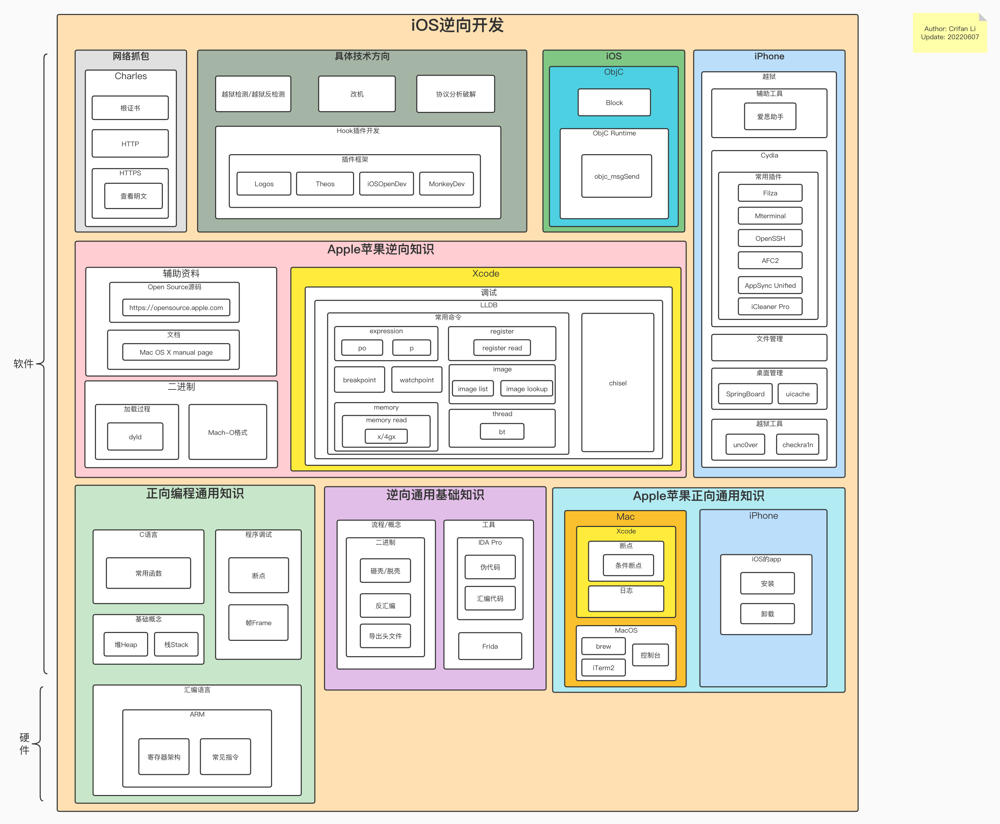

主页
1.1.
前言
1.2.
iOS逆向概述
1.2.1.
iOS逆向典型流程图
1.2.2.
iOS逆向领域架构图
1.2.3.
iOS逆向内容概述
1.2.3.1.
iOS典型逆向开发流程
1.2.4.
iOS逆向重点和难点
1.3.
心得
1.4.
子教程
1.5.
附录
1.5.1.
参考资料
本书使用 HonKit 发布
iOS逆向领域架构图
iOS逆向领域架构图
为了能对iOS逆向有个更全面和直观的了解，此处把iOS逆向开发所包含的各个领域的内容以及相互关系，整合到一张图：
iOS逆向领域架构图
在线浏览（支持缩放）
iOS逆向开发内容架构图 | ProcessOn免费在线作图
离线查看

results matching "
"
No results matching "
"